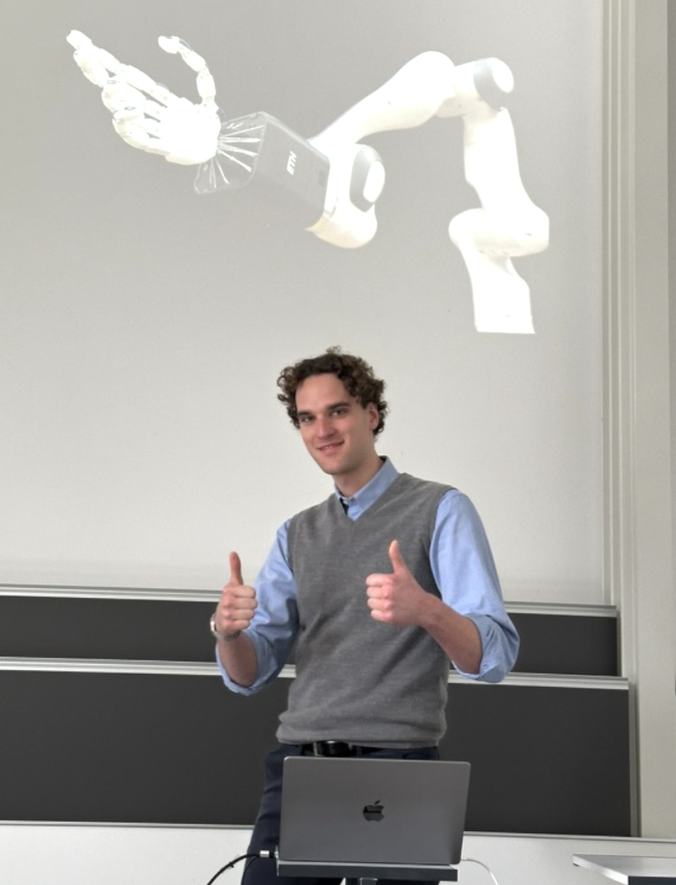
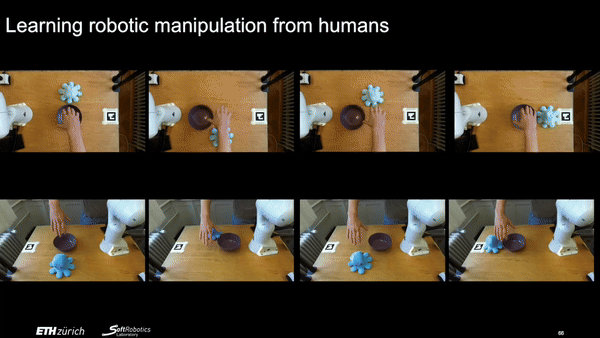
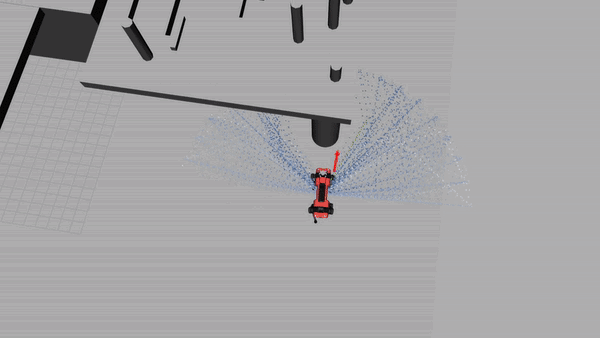
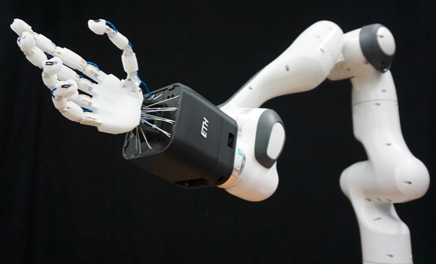
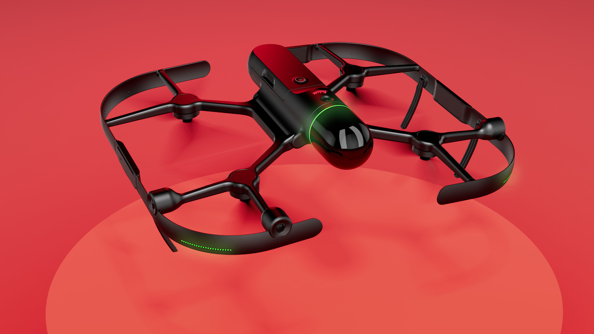
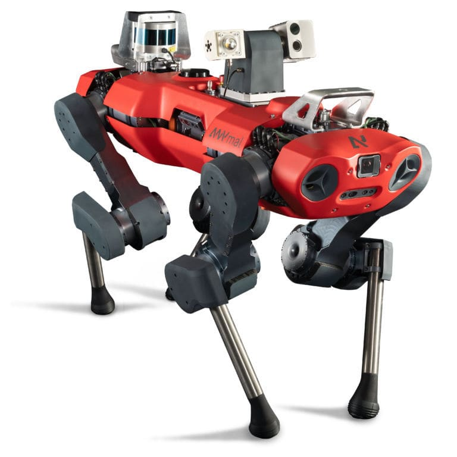

Giacomo Manzoni
Hello! My name is Giacomo, and I am a Master's student at ETH Zürich working on robot learning. My goal is to create policies that can solve real-life tasks, bringing robots into our daily lives.
I am interested in applying generative models in Imitation and Reinforcement Learning to create more adaptive and versatile policies. Additionally, I am interested in higher-level scene understanding and interaction problems.

I have worked for my Master's thesis on Learning Dexterous Manipulation from Humans at the Soft Robotics Lab under the supervision of Prof. Robert Katzschmann and Elvis Nava. Prior to that, I worked on quadruped navigation at the Robotic Systems Lab. I have also interned at Leica, working on 3D expoloration with drones.
Projects
A series of research projects that I have worked on.-

Learning dexterous manipulation from human videos
Soft Robotics Lab - Master's Thesis, 2024
We present a novel Imitation Learning framework to learn dexterous manipulation tasks directly from human videos. No teleoperation on the real robot is required. This will allow to scale the learning process to the vast amounts of publicly available human manipulation videos on the web, creating a foundation model for robot manipulation. -
 3D exploration algorithms for autonomous drone
3D exploration algorithms for autonomous drone
Internal product, Leica Geosystems. 2023 -

Motion Primitives based local planner for quadruped robots
Robotics Systems Lab - Semester Project, 2023
We present a planning architecture based on two main components: a precomputed motion library and an online decision making planner. This results in incredibly fast and efficient path planning, while also been able to fully exploit the motion capabilities of the legged platform.Robots
Main robotics paltforms I have learned with, and used in my various projects.-

Franka Panda robot arm + Faive manipulator
This ETH Zürich Soft Robotics Lab's manipulator robot consists of a Franka Emika Panda robotic arm, with the in-house developed Faive hand mounted as end-effector. I did not build this robot myself (even though I disassembled and assembled a few times). Instead, it is the culmination of several years of hardware development in the lab, whereas developing the software and controls for it is the main focus of my thesis. -

BLK To Fly autonomous drone
This drone is an incredible platform, completely in house developed by the Leica Geosystems team with a custom Lidar laser scanner in front. It's crazy how complex such a compact system can be, both in hardware and software. -

ANYmal quadruped
For my semester project on quadruped navigation I have used the main development platform at Robotics Systems Lab. I have only worked in simulation (Gazebo) but I had the cance to see the real robot in many occasions, also outside the lab.
-